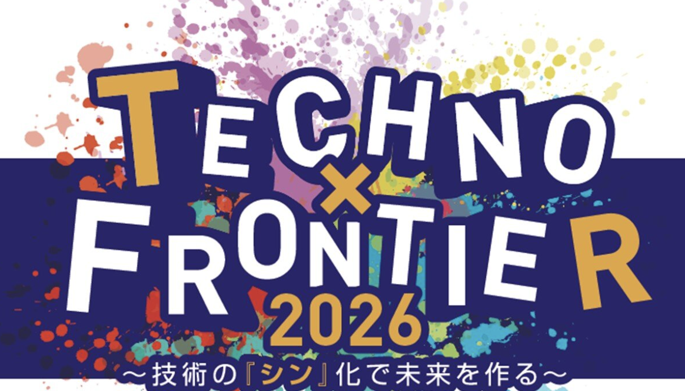

2026–現在
SB OAI Japan合同会社
エンジニアリング本部長
VP, Head of Engineering
Crystal Intelligenceの導入・展開と、実装。FDE・TPM・SWE・AIエンジニア組織のマネジメント、育成、採用を担当しています。
AI Engineering & Organizational Leadership
SB OAI Japan合同会社エンジニアリング本部長
VP, Head of Engineering
ソフトバンク株式会社法人事業統括 SB OAI本部 エンジニアリング統括部長
グループASI戦略本部
LINEヤフー株式会社メディア・検索ドメイン サイエンスSBU
AI、ソフトウェアエンジニアリング、健全な組織づくりを通じて、事業と社会の持続的な発展に貢献することを目指しています。
Credentials & Public Roles

「ソフトウェア開発の本質は、
人間関係の実践である。」
人と人が出会い、互いを尊重し、学び合いながらものづくりに取り組む。その積み重ねが、より良い社会につながると考えています。
SB OAI Japan合同会社
エンジニアリング本部長
VP, Head of Engineering
ソフトバンク株式会社
法人事業統括 SB OAI本部 エンジニアリング統括部長
2025年にソフトバンク株式会社へ参画し、2026年より現職を務めています。
2018年にYahoo! JAPANへ入社。主要メディアの大規模プロダクト開発、広告・マーケティング領域における1,000名超のエンジニアリング組織戦略と人材育成、技術研究室長を担当しました。その後、全社生成AI戦略と社内情報検索AIを推進し、10か月でMAU400％成長、10,000名超が利用する基盤へ拡大しました。
神戸高専電子工学科で半導体工学・ソフトウェア工学を学び、UNIX-Cプログラマーとしてキャリアを始めました。その後、日本テレビ放送網の番組Webサイトを8年間担当し、箱根駅伝・国政選挙速報システムの設計・開発・運用、読売新聞社のニュースメディア立ち上げに携わりました。上場企業の新規事業CTO、Gunosy執行役員・開発本部長として、事業と開発組織づくりにも取り組みました。
企業におけるAI・ソフトウェアエンジニアリングの実践に加え、
教育機関・行政・公共団体、アジャイルコミュニティでの活動を継続しています。
大規模環境におけるAIの社会実装、ソフトウェアエンジニアリング、技術戦略、アジャイルなエンジニアリング組織づくりを通じて、継続的な事業価値の創出に取り組んでいます。
アジャイルの実践・教育・コミュニティ活動
Scrum・XP・Lean・DevOps／国内外での知見共有日本生命保険相互会社
アジャイルCoE組織支援HRベンチャー企業
技術顧問パナソニックグループ労働組合連合会
DX講師日工株式会社
研究開発支援・アジャイルコーチ第一ライフテクノクロス株式会社
アジャイル組織・高度人材評価支援株式会社インテック
アジャイル組織化支援株式会社paild
エグゼクティブコーチ・人事／組織開発支援株式会社Gunosy
技術顧問国立高専機構 半導体人材育成センター
特任フェロー／産学官連携統括渋谷区
スタートアップ支援事業・行政DX推進アドバイザーNPO法人 東京都自閉症協会
「はじめてのAI体験」ワークショップ講師東京都立産業技術高等専門学校
「生成AI概論」講師 東京都立産業技術高専「生成AI概論」
東京都立産業技術高専「生成AI概論」Hack U KOSEN（LINEヤフー株式会社）
審査員 Hack U KOSEN 2022 プレゼンテーション・作品展示会・表彰式
Hack U KOSEN 2022 プレゼンテーション・作品展示会・表彰式全国高等専門学校プログラミングコンテスト
競技部門 審査委員開志専門職大学
特別講師Selected stories & appearances
1994 — Present
半導体・通信システムの開発を起点に、メディア、広告、検索、生成AIへと領域を広げてきました。現在は、AIを企業や社会で継続的に活用できる形へ実装するための技術と組織づくりに取り組んでいます。
エンジニアリング本部長
VP, Head of Engineering
Crystal Intelligenceの導入・展開と、実装。FDE・TPM・SWE・AIエンジニア組織のマネジメント、育成、採用を担当しています。
法人事業統括 SB OAI本部
エンジニアリング統括部長
グループASI戦略本部を兼務し、グループ横断のAIプロジェクトとエンジニアリング組織を推進しています。
生成AI統括本部
戦略企画本部／AI開発本部
全社生成AI戦略と社内情報検索AIのプロダクトマネジメントを担当。10か月でMAUが400％成長し、10,000名超・組織の90％超が利用する基盤へ拡大しました。
テクノロジーグループ
技術研究室長
執行役員
開発本部長
ニュースプロダクトと広告技術の開発、エンジニアリング組織の拡大、採用・人事・組織開発を担当。
システム開発本部 マネジャー
CTO
新規事業のマルチデバイス開発と、デジタルマーケティング領域の技術戦略・開発組織を担当。
ソーシャル事業本部
マネジャー
モバイル・ソーシャルアプリ、広告・検索領域の開発運営と、アジャイル開発・新規事業企画に携わりました。
プロジェクトマネジャー
プログラマー
日本テレビの番組Webサイト、箱根駅伝・選挙速報システム、読売新聞の主要ニュースメディアを開発しました。
UNIX-Cプログラマー
省庁の公共システム開発を中心に、NEC・東芝関連プロジェクト、NTTの交換機開発、KDDのデータ移行、J-COM@Homeのサーバー移行などに携わりました。
事業成果につながるソフトウェアエンジニアリングと、健全で持続可能なエンジニアリング組織づくり。その実践と支援を通じて、組織全体の力を引き出すことに取り組んでいます。
Speaking & Education
AI、アジャイル、ソフトウェアエンジニアリング、組織開発、半導体人材育成をテーマに、実践から得た知見を共有しています。
Agile Japan 2026 基調講演

AI・ソフトウェアエンジニアリング

Online Coaches Clinic Italy

生成AIに関するFD講演会

キャリアの中で感じたこと

Regional SCRUM GATHERING Tokyo 2017

モバイル・コンテンツビジネス

自治体におけるDX推進と人材支援
Build with empathy.